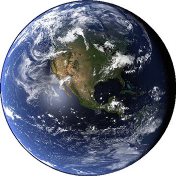

The United Nations (UN) is a sovereign federation of formerly-independent nation-states that spans across several territories on Earth and Luna (the moon), within the solar system and Milky Way galaxy.
It was founded in 1945 after World War II as an international organization facilitating cooperation in, among other areas, international law. Throughout the 21st century, Earth's national governments were on a continuous decrease in administrative power. After the damage done to the planet's ecosystem reached extreme levels, the world's nations decided to finally put aside their individual interests and international differences and achieve global unification. The UN Secretariat subsequently became the executive leader of all humanity and remained so until the Martian colony was granted independence from the UN.
The Security Council (UNSC) is the center of the executive branch, consisting of the Secretary-General and his or her immediate subordinates. The UNSC interacts with elements beyond Earth's sphere of control, like Mars, the Belt, and settlements in the outer planets, as well as independent interstellar colonies.
The UN is seated on Earth in New York City, but also has a presence on Luna, in the New Hague facilities in Lovell City. Its armed forces consist of the United Nations Navy and the United Nations Marine Corps.